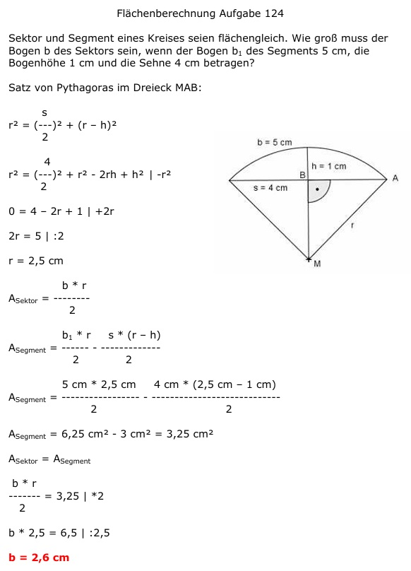

Aufgabe 124 Sektor und Segment eines Kreises seien flächengleich. Wie groß muss der Bogen b des Sektors sein, wenn der Bogen b1 des Segments 5 cm, die Bogenhöhe 1 cm und die Sehne 4 cm betragen?  Satz von Pythagoras im Dreieck MAB: s r2 = (---)2 + (r – h)2 2 4 r2 = (---)2 + r2 - 2rh + h2 |-r2 2 0 = 4 – 2r + 1 | +2r 2r = 5 | :2 r = 2,5 cm b * r ASektor = -------- 2 b1 * r s * (r – h) ASegment = -------- - ------------- 2 2 ASegment = 5 cm * 2,5 cm 4 cm * (2,5 cm – 1 cm) = --------------- - ------------------------- 2 2 ASegment = 6,25 cm2 - 3 cm2 = 3,25 cm2 ASektor = ASegment b * r ------- = 3,25 | *2 2 b * 2,5 = 6,5 | :2,5 b = 2,6 cm